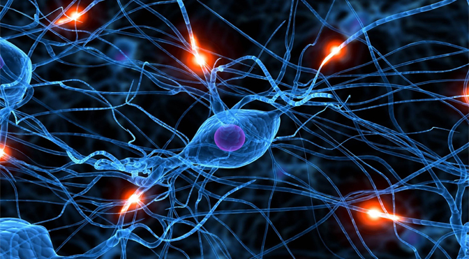
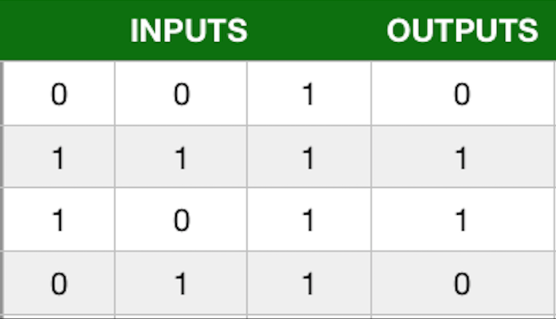
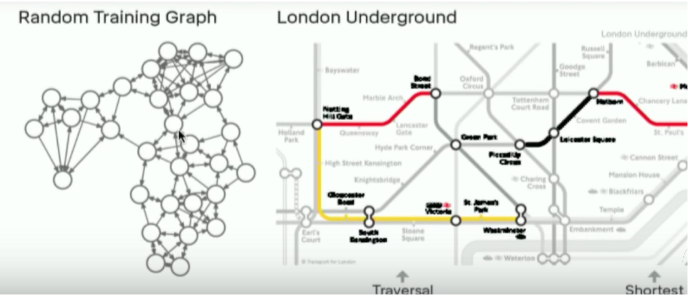
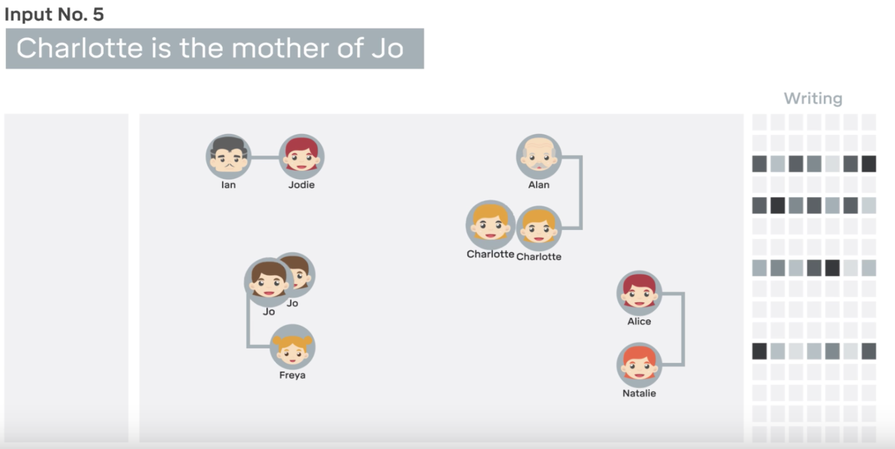
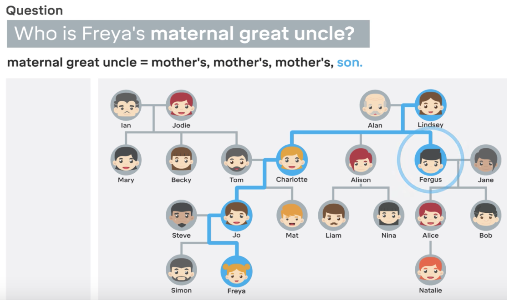

....In as few lines of code as possible
Take me to the code.
AI, Deep learning and Neural nets are all buzzwords these days and it can be quite intimidating given the rapid growth and interest in the area. I am going to solve this in two code dumps (one if you are in a hurry). Because you are already here, I am going to assume you don't need any convincing of the vast potential of Neural Networks, but if you do - click the top title to jump to my home page where there are lots of articles I have written on the merits of Neural Nets.
If you stick with me for the first code dump (30 lines) you will understand the core concept of how a Neural Network is used to build predictive models. If you are still around near halfway down the page for the second code dump (50 ~ lines) then you will see the hidden sauce which makes DeepLearning and Neural networks the hype they are today - backwards propagation.

Neural Networks exist both in nature (the structure of neurons in your brain) and in software - the digital imitation of this process
All the code here is in Python, I suggest you use an IDE like pycharm but if you are up for learning new things then Jupyter notebook is the way to go (it's what I wrote this blog in).
NETWORK PRINCIPLE
The image below shows a list of input/output relationships.
In the source code below, we are going to try and predict the output values by allowing the network to tune itself in the direction of the actual output so that the NN arrives at the answer independently. What we have in the end is a tuned 'model'.
Imagine you are trying to predict the output given the inputs, in this case there is a perfect correlation.

Above is a table of input output parameters. You can think of this as each row being a training case for the networ, where it has to work out the output given a set of inputs
Models are necessery for applications in real life, for example, if this was a fraud engine the model would give us a probability of fraud given certain input parameters. In this case, the outputs 1 would be fraud and 0 would be instances of no fraud. Of course this model would be far too simple, but the basic principles are the same.
Lets build a 2 Layer Neural Network
Lets go straight to the code, I will explain the key steps afterwards. This network performs forward propagation, basically there are two layers at each layer calculations are performed on nodes to steer in the direction of desired values.
import numpy as np
#SIGMOID FUNCTION
def sigmoid (x,deriv=False ): # deriv is a trigger we set based upon the function boolean passed in
if (deriv==True ):
return x*(1-x)
return 1/(1+np.exp(-x))
X = np.array([ [0 ,0 ,1 ],
[1 ,1 ,1 ],
[1 ,0 ,1 ],
[0 ,1 ,1 ] ])
y = np.array([[0 ,1 ,1 ,0 ]]).T # TRANSPOSE IT
# seed random numbers to make calculation
# deterministic (just a good practice)
np.random.seed(1 )
syn0 = 2*np.random.random((3 ,1 )) - 1 #synaptic weigths
for iter in range (10000 ):
#forward propagate
l0 = X
l1 = sigmoid(np.dot(l0,syn0))
#how much did we miss by?
l1_error = y - l1
# MULTIPLY THE AMOUNT WE MISSED BY THE
# SLOPE OF THE SIGMOID AT THE VALUES IN L1
l1_delta = l1_error * sigmoid(l1,True)
#update weights
syn0 += np.dot(l0.T,l1_delta)
print ("training complete" )
print (l1)
Then they added a question answering system, natural language was added. Not only did they train it on the London Underground path, they added natural language. They trained it first on randomly generated graphs then on a text database which was a question answer database. Then associated both, so then you could ask it “hey what’s the best way to get from point A to B , because it had this external memory story which had the previous learning graphs it was able to apply those.
It learned to optimise for one data set, then another and associate the two. This was a text database, it learned to associate questions with answers, then associate that to the london underground map. This is because it had the external memory store which allowed it to apply the map problem to the spoken questions.

In theory you could apply this to anything such as a subset of images with their labels, then something entirely unrelated. So you could ask, what kind of sound could this cat make it looks at the cat then sound files. It is not perfect nor is it AGI, but its a step in the right direction. It is called a computer because a standard computer has a processor and memory, at the kernel level anytime you perform actions the RAM preloads instructions which is fed to the CPU that takes the instructions, decodes it then executes it one step at a time and repeats the process. This process is called the instruction cycle, that is Von Neuman architecture and is the hall mark of computational science. GPUs are a different story and will be covered later.
This may also be a framework for also building hardware, “ if we switch our thinking from serially decoding instructions, to instead learning from instructions at the kernel/hardware level we could produce some interesting results”. There are people working on this, but it will be inspiring to think about the successor of to the Von Neuman architecture and Silicon medium for computing.
More DNC Applications
Another example of deep mind’s practical implementation by associating two different data types was with understanding complex family tree relations. They first fed it some associations with text descriptions as shown in the video below.
Layers of complexity were added incrementally, adding more branches to the family tree.

These were a group of Natural language text associations. But, then after building up the tree, you could ask a TEXT QUESTION which related to an unspecified connection i.e. when building up the tree, there were only a certain number of connections mentioned i.e. Charlotte is the mother of Jo, but we did not say explicitly who is Freya’s maternal great uncle.

When asking this question, it was able to use the optimised graph solution, but also using the optimised natural language solution together. Normally this wouldn't to be possible by any conventional machine learning algorithm or neural network. if you have seen something like Siri where someone asks a question similar, what is actually happening is simply an internet search. The possibilities for tying together two neural networks in a way they can learn from each other holds many great possibilities in store.
So using an external memory store sounds like a simple concept, but had never been fully implemented, Facebook did have dynamic memory network and there was also the neural Turing machine but the DNC has been the first successful implementation.
Whilst you may say, “wait a minute neural networks already have memory” - this is true but the memory acts as the weights and is interpolated so tightly with the processing But having the memory detached allows for magical results.
Further Reading
- The Differentiable Neural Computer - DeepMind
- Google's Deepmind Data Center Cooling
- Siraj Raval - full DNC walkthrough
Many thanks for reading, please like or share below if you want to see more.
Adam McMurchie 28/May/2017